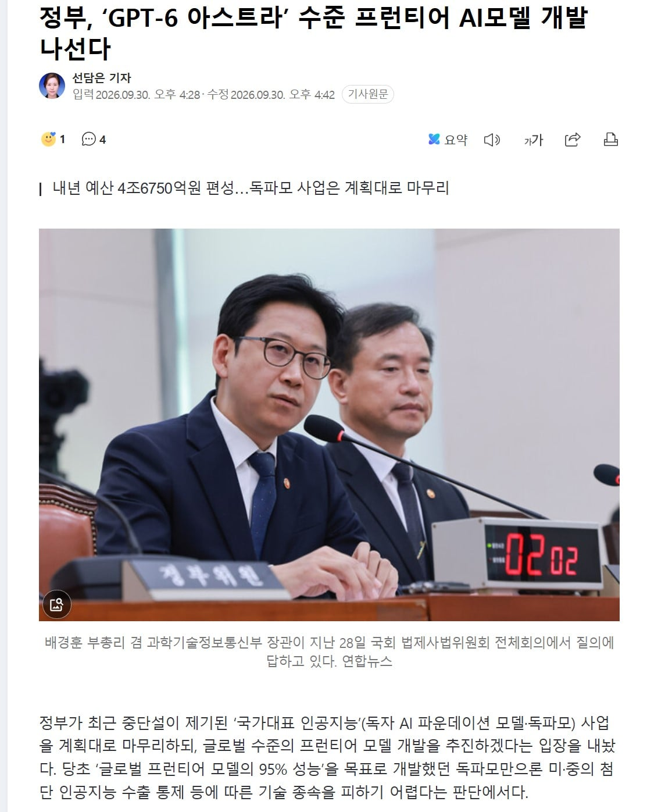

원래 한국판 AI 생태계 육성 사업으로 독파모란걸 이미 하고 있었음.
목표는 글로벌 프론티어 모델의 95% 성능 개발
근데 영 지지부진하니까, 독파모는 그냥 국내 산업용 AI 적용으로 바꾸고
4조원 줄테니까, 국내 AI 업체끼리 협력해서 GPT6 아스트라 급의 프론티어 모델을 만들라고 시키겠다고 함.
정작 국내 AI 업계는 이미 벌려놓은 프로젝트가
독파모, 모두의 AI, 산업별 특화 파운데이션 모델등 프로젝트 쓸데없이 많은데 어떻게 프론티어 AI 개발 하라는건지 당혹해하는 중
정부는 일단 그런거 모르겠고 4조원 투입할테니까, GPT6 아스트라급 프론티어 모델을 만들면 된다고 함 ㄷㄷ
과연.... 잘 될까?
이건 또 근데 모르겠다... 지금 AI 발전방향이 돈때려박아서 모델 덩치 키우는 식으로 가고는 있는데... 궁하면 또 방법이 바뀐다고 중국애들이 증류해서 한것처럼 뭔가 또 새로운 돌파구를 파낸다면야... 모르지 그런데 4조원 적긴하다